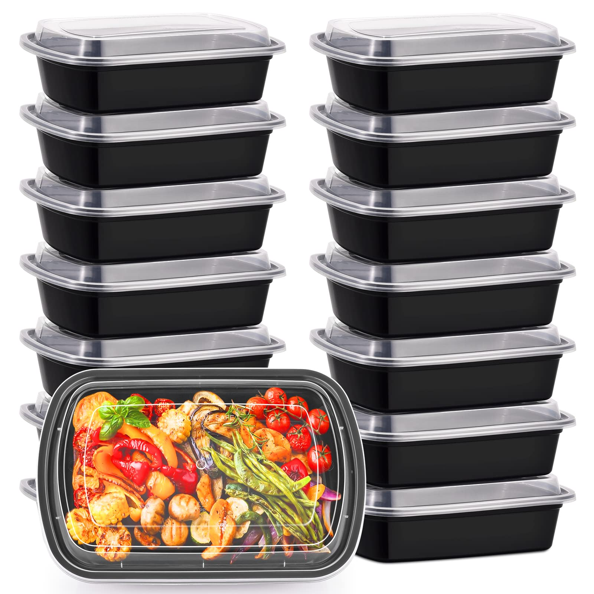
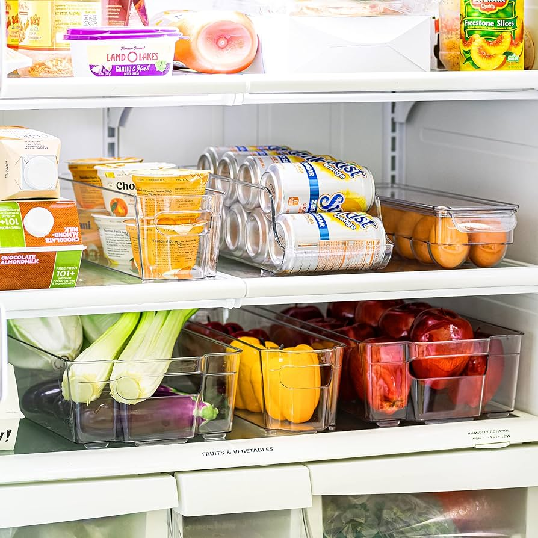
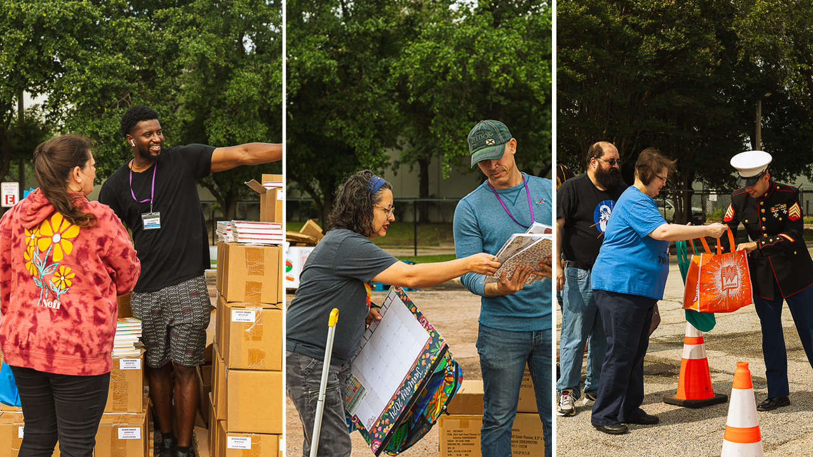
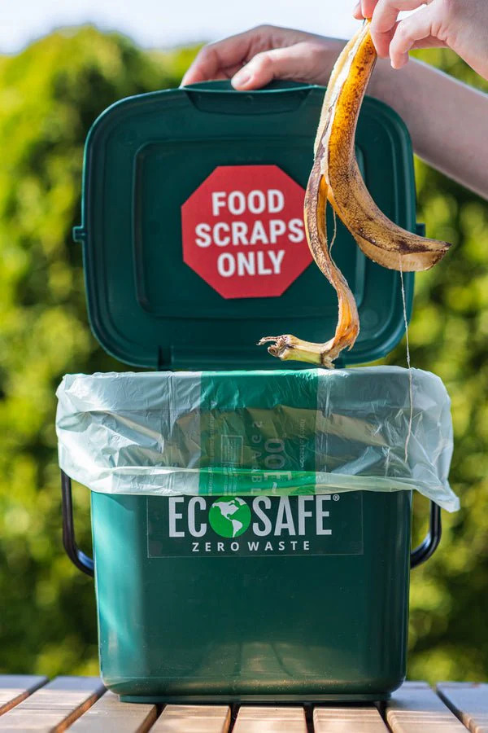

Simple ways to reduce waste and help your community.

Planning meals helps reduce food waste and saves money.

Proper storage keeps food fresh longer and prevents spoilage.

Donate unused food to shelters and food banks instead of wasting it.

Turn food waste into useful compost for the environment.